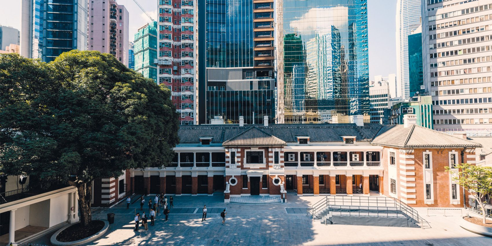

Welcome to Hong Kong!
With its dense cityscape and streets where centuries of history can exist next to a modern mall, Hong Kong has been the backdrop for more than a few movies. There are few sights more memorable than looking at one of Hong Kong's many bays at night, with skyscrapers lit up in every color known to man.
Yet the silver screen can only do so much to convey what it's like to be there. Try as one might, you can't taste dim sum just by looking at it. You can't feel the sea breeze, or smell the incense wafting from one of the more traditional landmarks, or ride the impressively modern subway system without actually visitng.
Where the Old World Meets the New
Tea Time!

Arguably one of the most famous exports of Hong Kong, Yum Cha literally means to drink tea. The name drastically understates what this meal usually involves though, as it would be more accurate to say that it is a full course lunch meal with any number of small plates of food that can be eaten alone or shared with many others.
Staples of this meal include barbequed pork buns, shrimp dumplings, and egg tarts, and there's no shortage of local restraunts that have their own version of traditional delicacies for all meals of the day, from vegan imitations of meat dishes to Western cuisine.
K11 Musea
A park, museum, and mall rolled into one, the K11 Musea is an entirely new interpretation of what the future of community spaces could look like. You can have lunch, look at art, and go to experience a degree of nature all in the same building. There's plenty to see even after you leave too, as K11 is located in the heart of the historic Tsim Sha Tsui district.
Tai Kwun
While colonial prisons are rarely considered very nice places, Tai Kwun has been renovated to serve a more educational role. Nowadays, it is a heritage center, giving visitors a chance to learn about the city's past or experience something more modern in the form of music and theatre performances.
Upcoming Events
Discover HK!
| Contact Us! | |
|---|---|
|
| 852 2508 1234 |
|
| Hong Kong Tourism Board |
|
| |
|
| Anson.Chan58 |